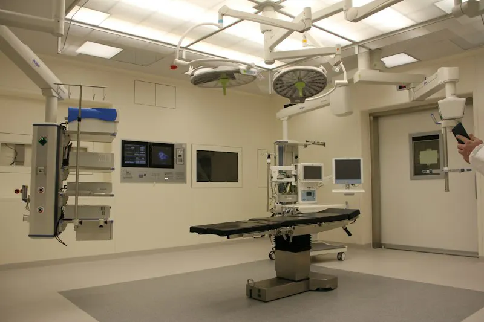

Stackly Services
Explore Stackly's 10 modular services designed in line with MocDoc's benchmark healthcare ecosystem. Deploy individual modules or our unified full-stack Hospital ERP.
OPD / IPD / Ward Map
200+ Analyzer Interfaces
Batch & Expiry POS
DICOM Web Viewer
The central operating system for secondary and tertiary care hospitals. Seamlessly unifies multi-departmental workflows from patient admission to discharge.


Built for solo practitioners and multi-specialty polyclinics looking for a fast, elegant, and clutter-free clinical recording software.
Automate end-to-end pathology and diagnostic workflows with our bidirectional analyzer integration engine and automated report delivery.

Control medicine pilferage, eliminate stockouts, and streamline multi-outlet inventory transfers with our pharmaceutical retail and hospital engine.
Integrated DICOM viewer and Radiology Information System (RIS). View X-rays, CT scans, MRIs, and ultrasounds directly in the patient medical record.

Study: Chest X-Ray PA View | Modality: CR | 5.2 MB Lossless

Deliver borderless medical consultations with encrypted WebRTC video, digital consent capture, and continuous vital monitoring from home.
Speed up insurance claim approvals, eliminate claim rejections, and handle complex multi-payer co-pay billing with automated verification.


Empower your patients with a beautifully branded iOS and Android hospital app to book appointments, view diagnostic reports, and manage family health.
Zero patient record loss. Zero clinical downtime. Handled end-to-end by Stackly clinical migration engineers.

Worried about patient data loss? Our dedicated clinical migration engineering team has safely migrated over 15 million medical records from desktop servers to Stackly Cloud without a minute of hospital downtime.